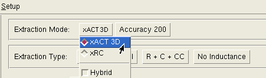
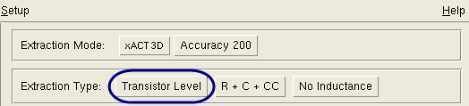

Perform transistor-level
extraction using the Calibre xACT 3D PDB extraction flow from Calibre
Interactive.
Procedure
- Start the PEX interface in
Calibre Interactive.
- Load a runset or rule file.
- Specify the extraction mode.
Click the Outputs button in the left
pane. Set Extraction Mode to xACT
3D.
Figure 1. Extraction Mode Setting
- Specify the extraction type.
Set Extraction Type to Transistor Level.
Figure 2. Transistor Level Setting
- Set other controls as needed.
You do not need to clear the
H-Cells field. Because Extraction Type is set to transistor level,
the H-Cells settings are ignored.
- Click the Run PEX button in the left pane.
Results
Check the Transcripts pane to verify
the run completed with no errors. If you have selected “View netlist
after PEX finishes” in the Outputs pane, a text viewer appears with
the generated netlist loaded.